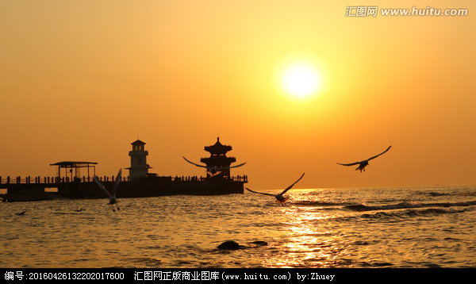
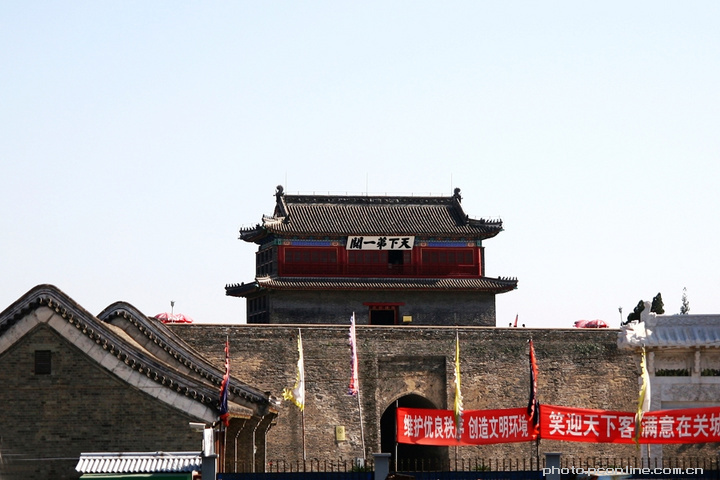

秦皇岛
秦皇岛，简称秦，又称港城，河北省地级市，世界级汽车轮毂制造基地和中国最大铝制品生产加工基地，北方最大粮油加工基地，中国首批沿海开放城市，中国海滨城市，东北亚重要的对外贸易口岸，地处环渤海经济圈中心地带，是东北与华北两大经济区的结合部。秦皇岛港是世界第一大能源输出港，有国民经济“晴雨表”之称。
秦皇岛是国家历史文化名城，因秦始皇求仙驻跸而得名，两千余载的岁月长河，留下了夷齐让国、秦皇求仙、魏武挥鞭等历史典故。秦皇岛曾协办北京亚运会和北京奥运会，是中国唯一协办过奥运会和亚运会的地级市。
秦皇岛是低碳试点城市；国家园林城市；中国优秀旅游城市；中国综合交通枢纽城市；第一批国家智慧城市试点；2012中国特色魅力城市；全国双拥模范城市；十大最佳休闲城市之一；全国十佳生态文明城市；全国十佳绿色生态旅游城市；全国首批无障碍设施建设示范创建城市；中国最具幸福感城市。
风景名胜
秦皇岛市旅游资源集山、河、湖、泉、瀑、洞、沙、海、关、城、港、寺、庙、园、别墅、候鸟与珍稀动植物等为一体，旅游资源类型丰富，秦皇岛市每年举办具有浓郁地方文化特色的山海关长城节、孟姜女庙会、望海大会、昌黎干红葡萄酒节等节庆活动。 旅游资源在分布上呈两条相对平行的带状分布，其中在滨海带上，有老龙头、第一关、姜女庙、秦皇求仙入海处、海上运动中心、新澳海底世界、野生动物园、鸽子窝公园、金山嘴、老虎石、北戴河名人别墅、联峰山、滑沙场以及众多的滨海浴场和各类主题公园等；在中北部山地——丘陵带上，有三道关——九门口——义院口——界岭口——桃林口——冷口——城子岭口长城和沿长城一线的各处文物古迹，以长寿山、角山、燕塞湖、祖山、背牛顶、天马山、碣石山、十里葡萄长廊、孤竹国文化遗址等。 截至2012年末，秦皇岛市共有旅游景区（点）47家，其中国家5A级景区1家（3处），4A级景区15家。旅游星级饭店58家，其中五星级饭店3家，四星级13家。
